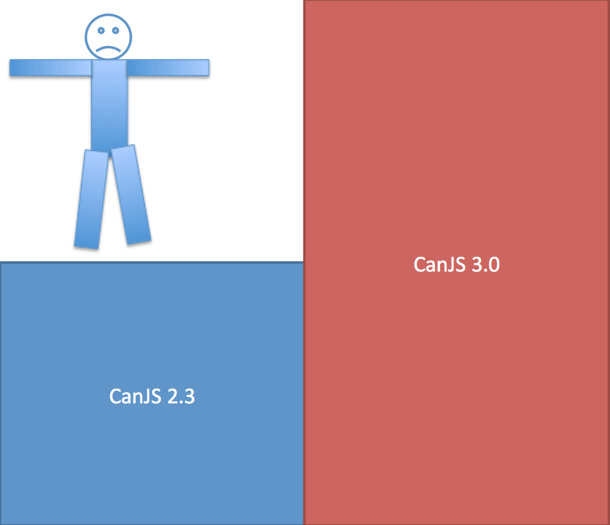
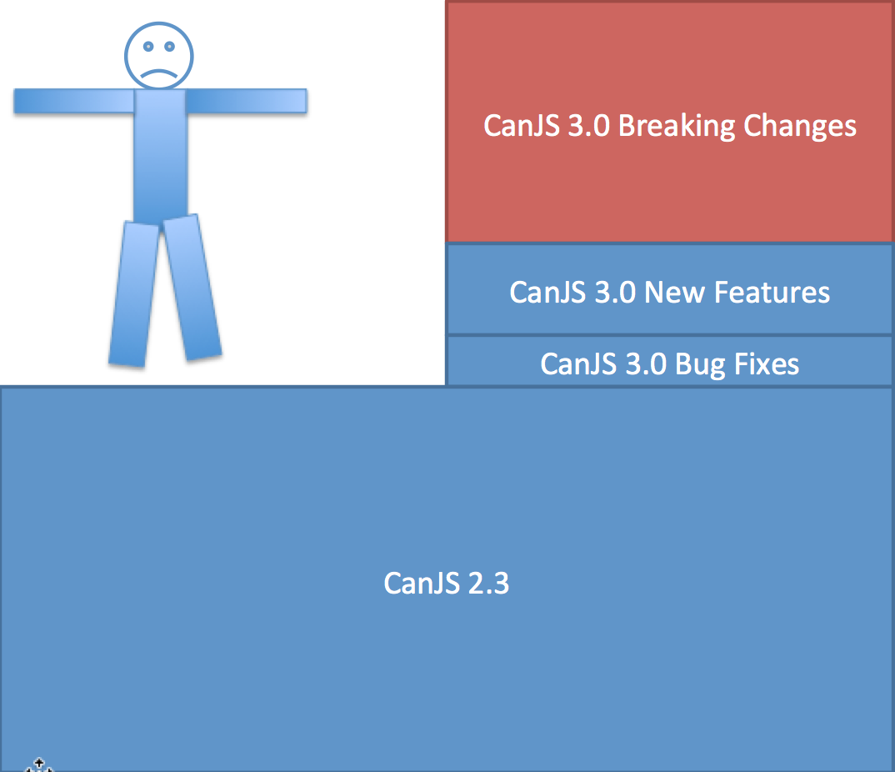
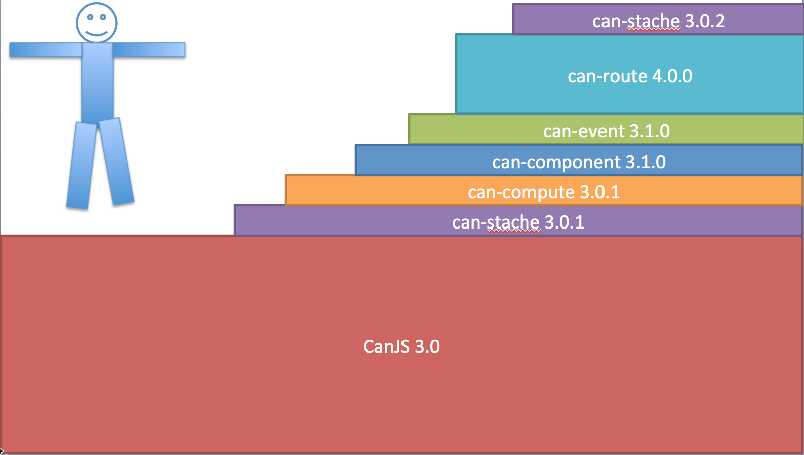
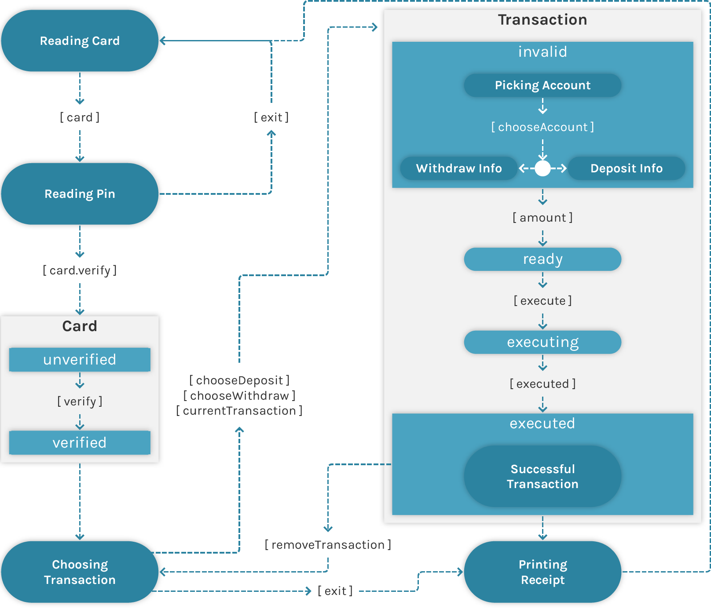
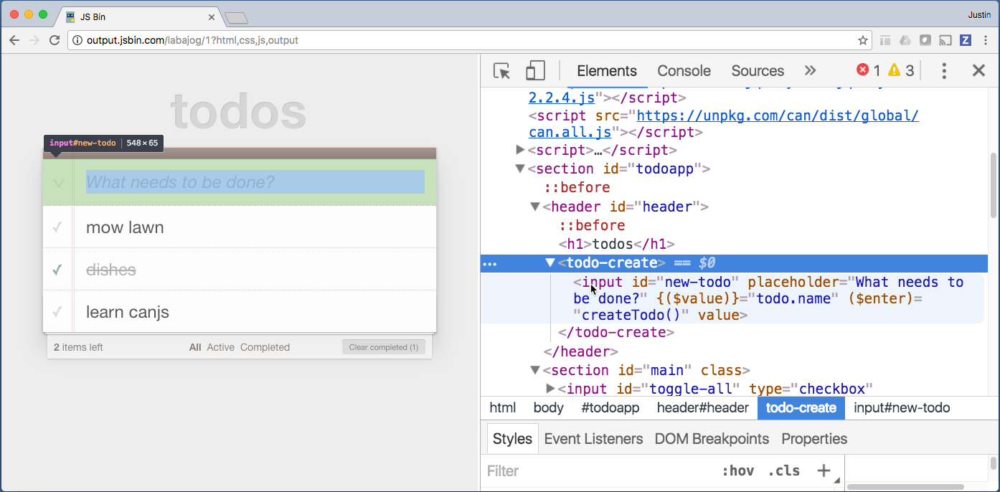

Technical Highlights
Learn about CanJS’s technical accomplishments.
Browser and Environment Support
CanJS supports:
- Latest Chrome, Firefox, Edge, Safari
- iOS Safari 11+
- NodeJS 6+ with can-vdom as a document.

Phenomenal Features, Small Size
The core of CanJS is under 50KB (gzipped). While there may be smaller architectural libraries, there are not other frameworks that provide comparable functionality. For custom elements, observables, live binding, routing, a model layer with intelligent caching and real-time support, 50KB is very small.
jQuery 3.1 is 30KB minified and gzipped, and that is only providing DOM utilities. CanJS implements its own DOM utilities, in addition to much more.
Ember 2.9 is 108KB minified and gzipped, providing a comparable feature set.
React 15.3 is 44KB minified and gzipped, yet React is, on its own, simply a View layer.
The Angular 2’s Hello World app, provided by the angular-cli, is ~100KB minified and gzipped.
Independent Repositories and Packages
CanJS is maintained in independent repositories, each with its own npm package and semantic version number. Organizing CanJS into individual repositories and packages has many benefits.
The obvious advantage is that pieces can be used without the whole. You can choose to use CanJS’s observables or can-fixture without the rest of the framework. You could even mix and match CanJS libraries with other libraries like React quite easily.
However, the main benefit is that independent repositories improve CanJS’s stability — one half of CanJS’s mission. This is because independent repositories make it easier to upgrade more frequently. For example, compare:
- Upgrading a 2.3 app, which was not organized in individual repositories, to
- Upgrading a 3.0 app.
Despite making relatively few breaking changes, and providing a migration guide, upgrading from CanJS 2.3 to 3.0 looks like a big step:

But if you break that step down, CanJS 2.3 is mostly CanJS 3.0 with a bunch of bug fixes, a heap of new features, and a few breaking changes. Most of the difficulties upgrading are the breaking changes, which account for the majority of the upgrade step size:

To get all of those bug fixes and new features in 3.0, you have to take on those breaking changes from 2.3 all at once. Depending on your company culture, and scale of your application, this might not be easy.
Going forward from CanJS 3.0, packages are released independently of
each other. You can upgrade to bug fixes and new features
immediately and delay breaking changes (example: can-route 4.0.0) until later. You can upgrade breaking changes in steps too. For example,
you might upgrade to can-route 4.0.0 one month and can-component 4.0.0
the following month. CanJS 3.0’s upgrade path might look like:

Independent repositories also mean that legacy libraries, like [can-ejs] can continue living through community-driven fixes and releases. They don’t die simply because they are no longer included in the core CanJS build.
Flexible Features
No framework can perfectly satisfy every application requirement. Often, a framework can’t even satisfy all the requirements for a single application. When this happens, it’s nice to have a framework that can flexibly adapt to the challenge. The sections below have many examples of this flexibility:
- CanJS can be both object-oriented and functional, imperative and declarative.
- CanJS’s MVVM observables are useful outside the framework.
- CanJS integrates with jQuery, making DOM-centric development easier.
There are a bunch of other ways that CanJS makes it easy to develop outside the box:
- can-control can handle when DOM-centric programming is necessary.
- can-compute can be wired up to anything.
- The Infrastructure collection has a number of utility libraries that can help jump-start development.
Cool Computed Values
CanJS has two powerful observable systems that are the foundation for many of the other core libraries:
- can-value - Observable values and derived observable values.
- can-observable-object - Observable objects.
This section shows examples using value.returnedBy(). However,
as [can-obserable-object] and can-observable-array use returnedBy() internally for computed getter properties
and asynchronous computed getter properties, the benefits
of computes extend to can-observable-object and can-observable-array. In a few examples cases, we’ll use computed getter properties to
show the advantages of computes.
value.returnedBy() is used in similar situations as event streams libraries like RXJS and Bacon.js. It is used to transform a set of observable values into another observable value. While event stream libraries are able to set up more complex transformations, value.returnedBy() can set up simple but common transformations more easily.
For example, the following compute keeps the completed count of todos in a list:
import { ObservableArray, value } from "can";
let todoList = new ObservableArray([
{ name: "dishes", complete: true },
{ name: "laundry", complete: false }
]);
let completedCount = value.returnedBy(() => {
return todoList.filter((todo) => {
return todo.complete;
});
})
completedCount is updated when any todo’s complete property changes like:
todoList[0].complete = false;
Or a todo is added to or removed from the list like:
todoList.push({ name: "learn about computes", complete: true });
completedCount automatically listens to all of these changes because
it infers dependencies. These observables also:
- Cache their value for faster reads.
- Dispatch events synchronously for easier testing and debugging.
- Update only once for batched changes for faster updates.
Inferred dependencies
In event stream libraries or other computed libraries, you must declare your dependencies like:
let fullNameStream = Kefir.combine(firstNameStream, lastNameStream, (firstName, lastName) => {
return firstName + " " + lastName;
});
or like:
fullName: Ember.computed("firstName", "lastName", function() {
return this.get("firstName") + " " + this.get("lastName");
});
value.returnedBy() infers its own dependencies without needing to explicitly declare them, therefore requiring less boilerplate code. This means you can write fullName like:
import { value } from "can";
let firstName = value.with("Payal");
let lastName = value.with("Meyer");
let fullName = value.returnedBy(() => {
return firstName.value + " " + lastName.value;
});
or like:
class Person extends ObservableObject {
static props = {
firstName: String,
lastName: String,
get fullName() {
return this.firstName + " " +this.lastName;
}
};
}
This ability is especially useful when the dependencies are dynamic as in the
following completedCount example:
let todoList = new ObservableArray([
{ name: "dishes", complete: true },
{ name: "laundry", complete: false }
]);
let completedCount = value.returnedBy(() => {
return todoList.filter((todo) => {
return todo.complete;
});
})
When todos are added to and removed from todoList, completedCount
will update its bindings automatically.
Cached values
Once a compute is bound (using on or addEventListener), it immediately calculates its value and caches it so any future reads will use the cached value.
In the following example, before fullName is bound,
fullName’s value is recalculated every time it is read. After fullName is bound,
its value is recalculated only when a dependent value changes.
import { value } from "can";
let firstName = value.with("Payal");
let lastName = value.with("Meyer");
let fullName = value.returnedBy(() => {
console.log("Calculating fullName.");
return firstName.value + " " + lastName.value;
});
fullName.value // console.logs "Calculating fullName."
//-> "Payal Meyer"
fullName.value // console.logs "Calculating fullName."
//-> "Payal Meyer"
fullName.on(() => {}) // console.logs "Calculating fullName."
fullName.value //-> "Payal Meyer"
fullName.value //-> "Payal Meyer"
firstName.value = "Ramiya" // console.logs "Calculating fullName."
fullName.value //-> "Ramiya Meyer"
Using cached values improves performance in situations where a computed value is frequently read by multiple parts of the application.
Synchronous
CanJS observables synchronously notify any event listeners. This makes testing and debugging easier.
The following example shows how you can
change the firstName value and immediately check the consequences of that change:
import { stache, value } from "can";
let template = stache("<h1>Welcome {{ fullName }}</h1>");
let firstName = value.with("Justin");
let lastName = value.with("Meyer");
let fullName = value.returnedBy(() => {
return firstName.value + " " + lastName.value;
});
let fragment = template({ fullName: fullName });
assert.equal(fragment.firstChild.innerHTML, "Welcome Payal Meyer");
firstName.value = "Ramiya";
assert.equal(fragment.firstChild.innerHTML, "Welcome Ramiya Meyer");
Batched events
The previous section highlighted that synchronous event [can-event/batch/batch.dispatch dispatching] and DOM updates are ideal for many scenarios. But, there are times where this can cause performance problems. To prevent unnecessary updates, events can be batched using [can-event/batch/batch.start batch.start] and [can-event/batch/batch.stop batch.stop]. Computes and the DOM will only be updated once for all changes within the batch.
In the previous example, {{ fullName }} would be updated twice
if firstName and lastName are changed:
firstName.value = "Payal";
lastName.value = "Shah";
Wrapping this in a batch makes {{ fullName }} update only once:
import { queues } from "can";
queue.batch.start();
firstName.value = "Payal";
lastName.value = "Shah";
queue.batch.stop();
Using batch.start and batch.stop
can even make quadratic updates (O(n^2)) become linear (O(n)).
Consider the performance of a completeAll method that completes every todo in a list
and a completeCount compute that calculates the number of complete todos:
let todoList = new ObservableArray([
{ name: "dishes", complete: false },
{ name: "laundry", complete: false }
]);
let completeAll = () => {
todoList.forEach((todo) => {
console.log("completing", todo.name)
todo.complete = true;
});
};
let completedCount = compute(() => {
return todoList.filter((todo) => {
console.log(" checking", todo.name);
return todo.complete;
});
});
completedCount.on("change", (ev, newVal) => {
console.log("completedCount is", newVal);
});
If completeAll is called, the following will be logged:
completeAll();
// console.logs "completing dishes"
// console.logs " checking dishes"
// console.logs " checking laundry"
// console.logs "completedCount is 1"
// console.logs "completing laundry"
// console.logs " checking dishes"
// console.logs " checking laundry"
// console.logs "completedCount is 2"
This means that every time a todo is marked as complete, completedCount loops
through every todo.
However, changing completeAll to use batch.start and batch.stop like:
let completeAll = function() {
batch.start();
todoList.forEach((todo) => {
console.log("completing", todo.name)
todo.complete = true;
});
batch.stop()
};
means completeAll will log the following:
completeAll();
// console.logs "completing dishes"
// console.logs "completing laundry"
// console.logs " checking dishes"
// console.logs " checking laundry"
// console.logs "completedCount is 2"
[can-event/batch/batch.start batch.start] and [can-event/batch/batch.stop batch.stop] can improve performance by preventing compute recalculations.
Outstanding Observable Objects
can-observable-object and can-observable-array is used to create observable Models and ViewModels like:
import { ObservableObject } from "can";
class Person extends ObservableObject {
static props = {
first: String,
last: String,
get fullName() {
return this.first + " " + this.last;
}
};
}
can-observable-object and can-observable-array uses can-value internally to support computed getter properties like the previous example’s fullName, so make sure to read about the benefits of cool computes.
As can-observable-object and can-observable-array powers almost everything in a CanJS application, it has grown to be quite powerful, performant and flexible. Read on to explore some of its best characteristics.
Expressive property definition syntax
can-observable-object and can-observable-array supports an expressive, powerful syntax for defining properties on observable objects and lists. It supports getter, setter, initial default, and type conversion, and serialize behaviors.
The following illustrates the signatures of these behaviors:
class Obj extends ObservableObject {
static props = {
propertyName: {
type:
TypeObject |
PrimitiveFunction |
ConstructorFunction |
FunctionFunction
default:
Primitive |
Function |
Object
get default() { /* ... */ }
get() {}
set(newVal,lastSet) { /* ... */ }
async(resolve) { /* ... */ }
value({resolve, listenTo, stopListening, lastSet}) { /* ... */ },
required: Boolean=false,
enumerable: Boolean,
serialize(value):{ /* ... */ }
}
};
}
can-observable-object and can-observable-array also supports a wide variety of short hands for setting up these behaviors. The following illustrates some of these behaviors:
class Obj extends ObservableObject {
static props = {
static props = {
propertyA: Object -> PropertyDefinition
propertyB: Primitive -> { default: Primitive }
propertyC: String -> { type: String }
propertyD: Constructor -> { type: Constructor }
get propertyE() { /* ... */ } -> { get: propertyE() { /* ... */ } }
set propertyF() { /* ... */ } -> { get: propertyF() { /* ... */ } }
method: Function
};
}
Putting it together, the following defines an Address and Person type with some nifty features:
// Address has a street, city, and state property
class Address extends ObservableObject {
static get props() {
return {
street: String,
city: String,
state: String
};
}
}
class Person extends ObservableObject {
static get props() {
return {
// first is a string
first: { type: String },
// last is a string
last: String,
// fullName is the combination of first and last
get fullName() {
return this.first + " " + this.last;
},
// age is a number that defaults to `0`
age: { default: 0, type: Number },
// addresses is a DefineList of Address types
addresses: [Address]
};
}
}
Object-oriented and functional
CanJS’s observables produce data types that are easy for others to consume, but can be implemented with the rigor of declarative programming. This is accomplished by combining the benefits of object-oriented programming, functional programming, and functional reactive programming.
Functional programming, which is a form of declarative programming, avoids changing state and mutable data. It treats programming as math. This eliminates side effects, making it easier to predict the behavior of an application.
Programming is, at its best, a branch of formal mathematics and applied logic. Edsger Dijkstra - 1 March 1999 at the ACM Symposium on Applied Computing at San Antonio, TX
However, object-oriented APIs often feel more natural.
Object-oriented programming leverages the fact that humans have millions of years of evolution invested in conceiving of the world in terms of things, which have properties, and associated methods of doing things with them. A salt shaker has a property of the amount of salt in it, and can be shaken. Tim Boudreau, Oracle Labs
We agree with both of these ideas! The following object-oriented SaltShaker API feels intuitive - any
developer can immediately understand it.
const saltShaker = new SaltShaker();
saltShaker.fill();
saltShaker.shake() //-> "salt"
saltShaker.shake() //-> "salt"
saltShaker.shake() //-> null
saltShaker.empty //-> true
To satisfy this API, SaltShaker could be implemented as follows:
import { ObservableObject } from "can";
class SaltShaker extends ObservableObject {
static get props() {
return {
saltCount: { type: Number, default: 0 },
get empty() {
return ! this.saltCount;
}
};
}
fill() {
this.saltCount = 2;
}
shake() {
let hasSalt = this.saltCount;
this.saltCount = hasSalt ? this.saltCount - 1 : 0;
return hasSalt ? "salt" : null;
}
}
const saltShaker = new SaltShaker();
saltShaker.fill();
console.log( saltShaker.shake() ) //-> "salt"
console.log( saltShaker.shake() ) //-> "salt"
console.log( saltShaker.shake() ) //-> null
console.log( saltShaker.empty ) //-> true
While empty is implemented declaratively,
notice how both fill and shake mutate the state of saltCount. In a more complex type,
this can easily lead to bugs. Instead, the value property behavior can
derive property values from changes in other property values. For example, the following
uses value to make saltCount a function of the calls to fill and shake.
import { ObservableObject } from "can";
class SaltShaker extends ObservableObject {
static get props() {
return {
saltCount: {
value({ listenTo, resolve }) {
var saltCount = resolve(0);
listenTo("fill", ()=>{
resolve(saltCount = 2);
});
listenTo("shake", ()=>{
resolve(--saltCount);
});
}
},
get empty() {
return ! this.saltCount;
}
};
}
fill() {
this.dispatch("fill");
}
shake() {
let hadSalt = this.saltCount;
this.dispatch("shake");
return hadSalt ? "salt" : null;
}
}
const saltShaker = new SaltShaker();
// Bind on saltCount or any property that reads saltCount
saltShaker.on("saltCount", () => {});
saltShaker.fill();
console.log( saltShaker.shake() ) //-> "salt"
console.log( saltShaker.shake() ) //-> "salt"
console.log( saltShaker.shake() ) //-> null
console.log( saltShaker.empty ) //-> true
CanJS provides three powerful functional helpers on can-observable-object and can-observable-array that will explore in the following sections:
Computed getter properties
Computed getters are the easiest way to declaratively transform
stateful values into derived values. For example, the following defines a completedCount
property on instances of the TodoList type:
class TodoList extends ObservableArray {
static get props() {
return {
get completedCount() {
return this.filter({ complete: true }).length;
}
};
}
static get items() {
return Todo;
}
}
let todos = new TodoList([{ complete: true }, { complete:false }]);
todos.completedCount //-> 1
These getters are made with can-compute, so they infer dependencies, cache their values, and are synchronous.
Async computed getter properties
It’s common to load data asynchronously given some state. For example, given
a todoId, you might need to load a todo from the server. This todo property
can be described using asynchronous computed getters as follows:
class EditTodoVM extends ObservableObject {
static get props() {
return {
todoId: Number,
todo: {
async(resolve) {
Todo.get(this.todoId).then(resolve);
}
}
};
}
}
Maintainable MVVM
CanJS applications are Model-View-ViewModel (MVVM) architecture with custom elements providing orchestration.

It’s a straightforward, but flexible architecture that produces easily testable, compose-able modules and components.
Straightforward
On the highest level, CanJS applications are broken down into 2 parts:
- Custom Elements that manage a particular part of the application.
- Models that handle data requests to and from the server.
For example, consider the following order page from place-my-order:

This page might be broken down into the following custom elements:
<pmo-nav><pmo-order-new>which is further broken down into:<bit-tabs><pmo-order-menu>
These Custom Elements use the Restaurant model
to get a restaurant’s menu by making a GET request to /api/restaurants;
and they use the Order model to create an order by making a POST request to
POST /api/orders.
Custom Elements are broken down themselves into two layers:
- ViewModels that manage the logic of a custom element.
- Views that convert the data and values of the ViewModel into HTML elements. Views update their HTML elements when the ViewModel changes and are able to call methods on the ViewModel when a user interacts with their HTML.
All of these parts, Custom Elements, Models, View Models, and Views, are mostly written using just a couple APIs:
- can-observable-object and can-observable-array observables for ViewModels and Models.
- can-stache templates with can-stache-bindings for Views.
The rest of the core APIs are just decorators, used to turn can-observable-object and can-observable-array observables and can-stache templates into something more:
- can-component combines a can-observable-object and can-observable-array observable and can-stache template into a Custom Element.
- can-route two-way binds a can-observable-object and can-observable-array observable with the browser’s URL.
- can-connect adds methods to a can-observable-object and can-observable-array observable, enabling it to create, read, update, and delete data on a RESTful URL.
CanJS is straightforward because it’s just about building custom elements and models with just a small set of tools - can-observable-object and can-observable-array and can-stache.
Independent
CanJS’s Models, Views, and ViewModels are all independent, individually useful layers. This independence is the source for the benefits of MVVM architecture discussed in the following sections:
- Flexible - change tools and patterns when the need arises.
- Testable - easily unit test parts of the application.
- Compose-able - combine smaller units of functionality into a large whole.
For now, we’ll just demonstrate that these things actually are independent using
code in the TodoMVC Guide. We’ll organize code related to the <todo-list> component
into individual and independent modules and files that look like:
├── models/
| ├── todo.js
├── components/
| ├── todo-list/
| | ├── view-model.js
| | ├── view.stache
| | ├── todo-list.js
The Model, in models/todo.js, looks like:
import { ObservableArray, ObservableObject, realtimeRestModel } from "can";
// Defines the type of data we get back from the server.
class Todo extends ObservableObject {
static get props() {
return {
id: { type: Number, identity: true },
name: String,
complete: { type: Boolean, default: false }
};
}
}
// Defines methods or properties on lists
// we get back from the server.
class TodoList extends ObservableArray {
static get props() {
return {
get active() {
return this.filter({ complete: false });
},
get complete() {
return this.filter({ complete: true });
}
};
}
static get items() {
return Todo;
}
}
// Connects the types above to a RESTful url.
Todo.connection = realtimeRestModel({
url: "/api/todos",
ObjectType: Todo,
ArrayType: TodoList
});
export default Todo;
This model can independently make requests to a RESTful service layer.
- Get a list of Todos
Todo.getList({ filter: { complete: true } }).then((todos) => {}) - Get a single Todo
Todo.get({ _id: 6 }).then((todo) => {}) - Create a Todo
const todo = new Todo({ name: "do dishes", complete: false }) todo.save().then((todo) => {}) - Update an already created Todo
todo.complete = true; todo.save().then((todo) => {}) - Delete a Todo
todo.destroy().then((todo) => {})
The ViewModel, in components/todo-list/view-model.js, looks like:
import { ObservableObject } from "can";
import Todo from "../models/todo";
export default class Model extends ObservableObject {
static props = {
todos: Todo.List,
editing: Todo,
backupName: String
};
// Returns true if the current todo is being edited.
isEditing(todo) {
return todo === this.editing;
}
// Marks a todo as being edited.
edit(todo) {
this.backupName = todo.name;
this.editing = todo;
}
// Cancels that todo as being edited.
cancelEdit() {
if(this.editing) {
this.editing.name = this.backupName;
}
this.editing = null;
}
// Updates the todo being edited on
// the server.
updateName() {
this.editing.save();
this.editing = null;
}
}
This ViewModel will be tested independent of the view in the testable section.
The View, in components/todo-list/view.stache, looks like:
<ul id="todo-list">
<!-- Loop through every todo -->
{{# for(todo of this.todos) }}
<!-- Create an li with the right class names -->
<li class="todo {{# if(todo.complete) }}completed{{/ if }}
{{# if( todo.isDestroying() ) }}destroying{{/ if }}
{{# if( this.isEditing(this) ) }}editing{{/ if }}">
<div class="view">
<!-- Connect this checkbox to the `complete` property
of the current todo -->
<input class="toggle" type="checkbox"
checked:bind="todo.complete"
on:change="todo.save()">
<!-- Edit this todo on double click -->
<label on:dblclick="this.edit(todo)">{{ todo.name }}</label>
<!-- Delete this todo on the server when clicked -->
<button class="destroy" on:click="todo.destroy()"></button>
</div>
<!-- Handle editing this todo with this input element -->
<input class="edit" type="text"
value:bind="todo.name"
on:enter="this.updateName()"
focused:from="this.isEditing(todo)"
on:blur="this.cancelEdit()"/>
</li>
{{/ for }}
</ul>
This View lives in its own file, so a designer can modify it without touching any JavaScript directly.
Finally, the component file in components/todo-list/todo-list.js puts everything together:
import { StacheElement } from "can";
import ViewModel from "./view-model";
import view from "./view.stache!";
class TodoList extends StacheElement {
static get view() {
return view;
}
static get props() {
return ViewModel;
}
}
customElements.define("todo-list", TodoList);
Read on to see how CanJS’s independence results in easily testable, flexible, and compose-able code.
Testable
CanJS’s MVVM architecture results in testable code. In the previous
section, we created the TodoMVC Guide’s <todo-list>’s Model, ViewModel, and View code.
The following shows examples of testing each part.
Testing the Model’s active and complete properties:
test("Todo active and complete", () => {
let list = new Todo.List([
{ name: "dishes", complete: false },
{ name: "lawn", complete: true }
]);
assert.deepEqual(list.active.get(), [{ name: "dishes", complete: false }], "one active");
assert.deepEqual(list.complete.get(), [{ name: "lawn", complete: true }], "one complete")
});
Testing the ViewModel’s edit and cancelEdit methods:
test("TodoListVM cancelEdit", () => {
let todos = new Todo.List([
{ name: "mow lawn", complete: false },
{ name: "dishes", complete: true },
]);
let todoListVM = new TodoListVM({
todos: todos
});
todoListVM.edit(todos[0]);
todos[0].name = "mow yard";
todoListVM.cancelEdit();
assert.equal(todos[0].name, "mow lawn");
});
To test the View, we typically recommend testing the component. The following, using can-fixture, tests that the component can edit a todo’s name.
test("<todo-list> can update todo name", (done) => {
fixture("PUT /api/todos/{id}", (request) => {
assert.equal(request.data.name, "MOW YARD", "update");
done();
});
let todos = new Todo.List([
{ name: "mow lawn", complete: false, id: 22 },
{ name: "dishes", complete: true, id: 23 },
]);
let template = stache("<todo-list todos:from='todos' />");
let todoListElement = template({ todos: todos }).firstChild;
// double click todo
todosListElement.querySelector(".todo label").dispatch( new MouseEvent("dblclick") );
// change its value to MOW YARD by hitting enter (which causes a change first)
let input = todoListElement.querySelector(".todo input.edit");
input.value = "MOW YARD";
input.dispatchEvent( new Event("change") );
input.dispatchEvent( new KeyboardEvent("keyup",{ code: "Enter", keyCode: 13 }) );
});
Flexible
CanJS’s architecture produces observables that stand on their own, useful outside of the framework. CanJS’s observables aren’t dependent on a diffing engine to identify changes. Instead, any other tool or library can be an observer or call methods on the observable.
This JS Bin shows an analog clock that uses the Canvas API. The Analog
clock listens to a timer observable and updates the position of the second, hour, and minute
hands when the time changes.
Analog = function(element, timer) {
// ...
timer.on("time", this.drawClock.bind(this) );
};
let timer = new Timer();
new Analog(document.getElementById("analog"), timer);
Also, with the ideas discussed in Object-oriented and functional, CanJS applications can closely approximate a stateless, redux-like, architecture. While we think this architecture creates more work than necessary for developers, it’s possible by:
- Having a single, ApplicationViewModel that contains all state, derived using value from events dispatched on the ApplicationViewModel.
- Enforcing that parent-to-child communication only uses one-way
key:from bindings like:
<child-component prop:from="parentValue"/> - Enforcing that child-to-parent communication is on:event based:
<child-component on:event="parentMethod()"/>
Compose-able
We believe that application state should be federated:
Federated - form or be formed into a single centralized unit, within which each state or organization keeps some internal autonomy.
CanJS applications are composed from hierarchical can-components, each containing their own independent state (their own ViewModel). This architecture is at the core of CanJS’s approach to building large applications.
The secret to building large apps is never build large apps. Break your applications into small pieces. Then, assemble those testable, bite-sized pieces into your big application.
CanJS applications can be represented by Hierarchical State Machines. The ATM Guide
walks through an example of this concept where a Card, Deposit, and Withdrawal’s states
are composed into the ATM’s state.

This dispersed (federated) state means that a Card is still useful without the
ATM. A Card can make AJAX requests and maintains its state of being
verified or unverified.
Federated state stands in contrast to architectures that have a one-way data flow. Architectures with a one-way data flow usually flow to a central and global state mechanism. That state mechanism becomes an implicit dependency of every component in the application. This creates additional downstream problems:
It becomes harder to work independently and verify the behavior of component of the project. Thus, scaling the team and parallelizing the effort becomes trickier, as several developers might have to touch the same central state mechanism.
Individual components become less reusable in other contexts because of their dependency on this external state layer.
Individual components become harder to test in isolation, since testing them requires importing or mocking large external dependencies.
Veracious ViewModels
CanJS’s ViewModels are can-observable-object and can-observable-array observables that manage the state of a can-component. As ViewModels are observables, CanJS’s ViewModels have all the benefits of CanJS’s outstanding observable objects, namely:
- Expressive property definition syntax
- Object-oriented and functional
- Computed getter properties
- Async computed getter properties
In CanJS, the ViewModel is its own layer, completely independent from the template and the component. This is why ViewModels are largely responsible for many of the benefits of CanJS’s maintainable MVVM architecture:
The introduction of a strong ViewModel provides key advantages for maintaining large applications:
Decouples the presentation from its business logic - A ViewModel is essentially an object and methods representing the state of a View. This separation of concerns enables simple, HTML-based Views containing minimal logic, while the ViewModel manages the complexities of application logic.
Enables designer/developer cooperation - Because the view is stripped of code and application logic, designers can safely and comfortably change the View without fear of breaking things.
Enables easier testing - ViewModels can be unit tested easily. Because they represent the view’s state without any knowledge of the DOM, they provide a simple interface for testing.
Vivacious Views
CanJS views are can-stache templates, that implement a syntax similar to Mustache and Handlebars, and include special features like event bindings, custom elements, and performance optimizations.
can-stache templates look like HTML, but with magic tags like {{expression}} and view bindings like key:bind in the template. For example, the following is the application template in the TodoMVC Guide:
<header id="header">
<h1>todos</h1>
<todo-create/>
</header>
<ul id="todo-list">
{{# for(todo of this.todos) }}
<li class="todo {{# if(todo.complete) }}completed{{/ if }}">
<div class="view">
<input class="toggle" type="checkbox"
checked:bind="todo.complete">
<label>{{ todo.name }}</label>
<button class="destroy"
on:click="todo.destroy()"></button>
</div>
<input class="edit" type="text" value="{{ todo.name }}"/>
</li>
{{/ for }}
</ul>
The following sections cover:
- The powerful syntaxes that support the transformation of any ViewModel into HTML.
- How custom elements and attributes make applications easer to assemble and debug.
- The binding syntaxes that allow HTML to call methods back on the ViewModel.
- The strategies used to keep DOM updates to a minimum.
- How Views can fit in your larger ecosystem with template minification, dependency declarations, and progressive loading.
Mustache and Handlebars extended syntax
can-stache templates implement the mustache syntax Mustache, adopt many of the Handlebars extensions, and provide a few extensions of their own. The result is a simple syntax that covers the most common things needed in a template, but is capable of translating any ViewModel into HTML.
can-stache is built on the Mustache spec because Mustache simplifies the most common needs of templates into a very limited subset of syntax. Most of Mustache is just:
- {{expression}} - to insert content into the page.
- {{#expression}}...{{/expression}} - to do conditionals, looping, or change context.
A simple template might look like:
<p>Hello {{ this.name }}</p>
<p>You have just won {{ this.value }} dollars!</p>
{{# this.in_ca }}
<p>Well, {{ this.taxed.ca.value }} dollars, after taxes.</p>
{{/}}
This is not enough to translate every ViewModel into HTML, so can-stache supports additional JavaScript-like syntaxes such as the ability to call methods and use for(of) loops.
A template that uses those features looks like:
{{# for(player of players) }}
<h2>{{ player.name }}</h2>
{{# for( stat of this.stats.forPlayerId(player.id) ) }}
<span>
{{ stat.type }}
</span>
{{/ for }}
{{/ for }}
Custom elements and attributes
CanJS supports defining custom elements and
attributes. You can make it so adding a <ui-datepicker>
element to the page creates a date picker widget; or, you can make it so
a my-tooltip="your message" attribute adds a tooltip.
Custom elements are created for widgets like <ui-datepicker> and for
higher-order components like <acme-message-editor>. Higher-order components
often assemble the behavior of multiple widget components. Custom elements are created with tag or can-component.
Custom attributes are typically used for mixins that can be added to any element. Custom attributes are created with attr.
The main advantages of building applications based on custom HTML elements and attributes are:
- Ease of use - Designers can do it! Non-developers can express complex behavior with little to no JavaScript required. All you need to build a new page or feature is HTML.
- Application assembly clarity - Applications assembled with custom elements are easier to debug and and understand the relationship between the user interface and the code powering it.
Let’s explore these benefits more in the following sections:
Ease of use
Before custom HTML elements existed, to add a date picker to your page, you would:
Add a placeholder HTML element
<div class="datepicker" />Add JavaScript code to instantiate your datepicker:
$(".datepicker").datepicker(task.dueDate)Wire up the datepicker to update the rest of your application and vice-versa:
task.on("dueDate", (ev, dueDate) => { $(".datepicker").datepicker(dueDate) }) $(".datepicker").on("datechange", (ev, dueDate) => { task.dueDate = dueDate; });
With custom HTML elements, to add the same datepicker, you would simply add the datepicker to your HTML or template:
<ui-datepicker value:bind="task.dueDate"/>
That might seem like a subtle difference, but it is actually a major step forward. The custom HTML element syntax allows for instantiation, configuration, and location, all happening at the same time.
Custom HTML elements are one aspect of Web Components, a collection of browser specs that have yet to be implemented across browsers.
Application assembly clarity
Custom elements make it easier to tell how an application was assembled. This is because you can inspect the DOM and see the custom elements and their bindings.
The
following shows inspecting the TodoMVC Guide’s “What needs to be done?” input element. Notice how it’s easy to tell that its behavior is provided by the
<todo-create> element.

Data and Event Bindings
can-stache includes Mustache data bindings that update the DOM when data changes. For example, if the data passed to the following template changes, the DOM is automatically updated.
<h1 class="{{# if(user.admin) }}admin{{/ if }}">Hello {{ user.name }}</h1>
In addition to the default Mustache data bindings, the can-stache-bindings module adds more powerful data and event bindings. These event bindings provide full control over how data and control flows between the DOM, ViewModels, and the can-view-scope. Bindings look like:
on:event="key()"for event binding.prop:from="key"for one-way binding to a child.prop:to="key"for one-way binding to a parent.prop:bind="key"for two-way binding.
To two-way bind an <input> element’s value to a todo.name looks like:
<input value:bind="todo.name"/>
To two-way bind a custom <ui-datepicker>’s date to a todo.dueDate looks like:
<ui-datepicker date:bind="todo.dueDate"/>
By mixing and matching $ and the different syntaxes, you have complete control over how
data flows.
Minimal DOM updates
Everyone knows that updating the DOM is traditionally the slowest part of JavaScript applications. CanJS uses two strategies for keeping DOM updates to a minimum: observation and data diffing.
To understand how these strategies are used, consider a template like:
<ul>
{{# for( todo of completeTodos() ) }}
<div>{{ todo.name }}</div>
{{/ for }}
</ul>
And rendered with viewModel like:
class ViewModel extends ObservableObject {
static props = {
tasks: Todo.List
};
completeTodos() {
return this.tasks.filter({ complete: false });
}
}
const viewModel = new ViewModel({
tasks: new Todo.List([
{ name: "dishes", complete: true },
{ name: "lawn", complete: false }
])
})
Observation
CanJS directly observes what’s happening in each magic tag
like {{ name }} so it can localize changes as much as possible. This means
that when the first todo’s name is changed like:
viewModel.tasks[0].name = "Do the dishes"
This change will be observed, and a textNode in the div will simply
be updated with the new name. There’s no diffing on the whole template. A
change happens and we know directly what is impacted.
Data diffing
The {{# for(of) }} helper provides data diffing. It is able
to do a difference between two arrays and calculate a minimal set of mutations to
make one array match another. This means that if a new task is added to the
list of tasks like:
viewModel.tasks.push({ name: "Understand diffing", complete: true });
This change will be observed, and a new array will be returned from
completeTodos(). The #for helper will diff this new array to the
original array, and only create a single new <div> for the new todo.
Template minification
While templates provide obvious benefits to application maintainability, they can be a chore to correctly integrate into the build tool chain. The steal-stache library provides an easy hook to load can-stache templates using StealJS and include the compiled templates into the minified result of the build.
steal-stache returns a renderer function that will render the template into a document fragment.
import todosStache from "todos.stache"
todosStache([{ name: "dishes" }]); //-> <documentFragment>
When the build is run, this import statement will tell StealJS that "todos.stache" is a dependency, and will include an already parsed representation in the build result.
In-template dependency declarations
can-view-import allows templates to import their dependencies like other modules. You can import custom elements, helpers, and other modules straight from a template module like:
<can-import from="components/my_tabs"/>
<can-import from="helpers/prettyDate"/>
<my-tabs>
<my-panel title="{{ prettyDate start }}">...</my-panel>
<my-panel title="{{ prettyDate end }}">...</my-panel>
</my-tabs>
Progressive Loading
A template may load or conditionally load a module after the initial page load. <can-import> allows progressive loading by using an end tag.
This feature, when used with steal-stache, signals to the build that the enclosed section’s dependencies should be dynamically loaded at runtime.
{{# eq(location, "home") }}
<can-import from="components/home">
<my-home/>
</can-import>
{{/ eq }}
{{# eq(location, "away") }}
<can-import from="components/chat">
<my-chat/>
</can-import>
{{/ eq }}
Malleable Models
CanJS’s models are primarily responsible for defining your data’s schema and communicating with a server to read and write data.
In addition to CRUD and real-time capabilities, [can-set] and can-connect provide lots of great features out-of-the-box:
- Memory-safe instance store
- Real-time list updates
- Parameter awareness
- Caching and minimal data requests
- Related-data features
We’ll cover each of these in the sections below.
Separation of concerns
CanJS separates your model layer into two parts:
- Communicating with a server.
- Managing your data’s schema.
Separating these two concerns means your model data isn’t tied to how you communicate with your API. Your project may start with a RESTful API for CRUD operations but end up with a real-time WebSocket API, and with CanJS, that change doesn’t affect how your data is modeled.
Additionally, with our mixin-based approach, you can easily add behaviors to both parts separately. Want to add Local Storage caching? It’s a one-line add-on. How about a behavior to efficiently combine network requests? One line too! Need something not provided by can-connect? Write and mix in your own custom behaviors.
This separation of concerns and powerful mixin behavior is accomplished by encapsulating the code required to connect to a service and encouraging typed definitions of your model data. For every “type” of data object in your project, you can create a model to represent the properties and methods attached to it. With this model in hand, you can structure how you communicate with your server. Different API calls can return the same type of data and have those represented as the same model objects.
Let’s look at an example of how we would define a Todo type and a list of todos:
import { ObservableArray, ObservableObject } from "can";
class Todo extends ObservableObject {
static props = {
id: { identity: true, type: Number },
complete: Boolean,
name: String
};
}
class TodoList extends ObservableArray {
static props = {};
completeCount() {
return this.filter({ complete: true }).length;
}
static items = Todo;
}
This example uses can-observable-object to create a type definition for a Todo; each instance of Todo has a boolean complete property and a string name property.
This example also uses can-observable-array to define a type for an array of Todo instances; the list has a completeCount method for easily determining how many todos in the list have been completed.
Using can-rest-model, we’ll create a connection between a RESTful /api/todos service and our Todo instances and TodoList lists:
import { restModel } from "can";
Todo.connection = restModel({
url: "/api/todos",
ObjectType: Todo,
ArrayType: TodoList
});
That connection can be used to get a Todo.List of Todos:
Todo.getList({}).then((todos) => {
// Do what you’d like with the `todos`
});
Memory-safe instance store
Let’s continue with our todo app example and imagine that we want to show two lists on a page: incomplete and urgent todos.
First, let’s fetch the incomplete todos:
Todo.getList({ filter: { completed: false } }).then((incompleteTodos) => {});
incompleteTodos might look like this:
[
{ id: 2, completed: false, name: "Finish docs", priority: "high" },
{ id: 3, completed: false, name: "Publish release", priority: "medium" }
]
Next, let’s fetch a list of high-priority todos:
Todo.getList({ filter: { priority: "high" } }).then((urgentTodos) => {});
urgentTodos might look like this:
[
{ id: 1, completed: true, name: "Finish code", priority: "high" },
{ id: 2, completed: false, name: "Finish docs", priority: "high" }
]
Note that the “Finish docs” todo appears in both lists. If we make a change to the todo (e.g. changing its name), we want that change to appear in both lists.
can-realtime-rest-model’s instance store keeps a reference to every model object by id (but you can [can-set.props.id change] which property is used). It does two things:
- Prevents duplicate instances of a model object from being created.
- Cleans up unused instances to release memory when they’re no longer referenced.
Let’s look at both of these points in more detail.
Duplicate instances
The instance store prevents duplicate instances from being created by storing each model object by its identity. When a model object is fetched from the server, CanJS checks its identity to see if it’s already in the instance store; if it is, then CanJS will reuse the same object.
In our example, CanJS puts the “Finish docs” todo in the instance store when incompleteTodos is fetched. When urgentTodos is retrieved, CanJS sees the “Finish docs” todo with the same id, so it reuses the instance of “Finish docs” that is already in the instance store.
If these todos are displayed in separate lists on the page, and a user marks “Finish docs” as completed in one of the lists (causing the completed property to be set to true), then the other list will reflect this change.
Prevent memory leaks
A global instance store sounds great until you consider the memory implications: if every model object instance is tracked, then won’t the application’s memory usage only grow over time?
CanJS solves this potential problem by keeping track of which objects are observing changes to your model object instances.
The reference count for each object increases in two ways:
Explicitly: if you use addInstanceReference or call
.on()on an instance (e.g.todo.on("name", () => {}))Implicitly: if properties of the instance are bound to via live-binding in a view, e.g.
Name: {{ name }}in a can-stache template
Similarly, the reference count is decreased in two ways:
Explicitly: if you use deleteInstanceReference or call
.off()on an instanceImplicitly: if part of the DOM connected to a live-binding gets removed
When the reference count for a model object instance gets back down to 0 (no more references), the instance is removed from the store so its memory can be garbage collected.
The result is that in long-running applications that stream large amounts of data, this store will not cause memory to increase unnecessarily over time.
You can read more about the benefits of the instance store in our “Avoid the Zombie Apocalypse” blog post.
Real-time list updates
CanJS also automatically inserts, removes, and replaces objects within lists.
Let’s continue with our incomplete and urgent todo example from the previous section.
incompleteTodos looks like this:
[
{ id: 2, completed: false, name: "Finish docs", priority: "high" },
{ id: 3, completed: false, name: "Publish release", priority: "medium" }
]
urgentTodos looks like this:
[
{ id: 1, completed: true, name: "Finish code", priority: "high" },
{ id: 2, completed: false, name: "Finish docs", priority: "high" }
]
In the UI, there’s a checkbox next to each urgent todo that toggles the completed property:
todo.completed = !todo.completed;
todo.save();
When the user clicks the checkbox for the “Finish docs” todo, its completed property is set to true and it disappears from the incompleteTodos list when .save() is called.
This is made possible by two things:
The list store contains all of the lists loaded from the server. It’s memory safe so it won’t leak.
can-query-logic understands what your parameters mean so it can insert, remove, and replace objects within your lists. This is discussed in the following "Parameter awareness" section.
CanJS’s real-time list updates work great with "push notification" systems like socket.io and SignalR. To add realtime behavior to a CanJS app, you just have to call the createInstance, updateInstance and destroyInstance when updates happen similar to the following:
let socket = io("https://example.com");
socket.on("todo created", (todo) => {
Todo.connection.createInstance(todo)
});
socket.on("todo updated", (todo) => {
Todo.connection.updateInstance(todo)
});
socket.on("todo removed", (todo) => {
Todo.connection.destroyInstance(todo)
});
Parameter awareness
When you make a request for incompleteTodos like the one below:
Todo.getList({ filter: { completed: false } }).then((incompleteTodos) => {});
The { filter: { completed: false } } object is passed to the server as parameters and represents all incomplete todos.
If your server expects a different format, it can be configured with can-query-logic.
The { filter: {completed: false } } parameters are associated with incompleteTodos so can-connect knows that incompleteTodos should contain any todo with a false completed property. By understanding what
the parameters used to request data mean, all sorts of interesting behaviors and performance optimizations
can happen, including:
- Real-time updates as described in the previous section.
- Fall-through caching, request caching, and combining requests behaviors as described in the following sections.
Parameter awareness is provided by can-query-logic. Read more about the magic of can-query-logic in its API docs.
Caching and minimal data requests
Undoubtedly, the slowest part of any web application is communicating with the server. CanJS uses the following strategies to improve performance:
- Fall-through caching: improve perceived performance by showing cached data first (while still fetching the latest data)
- Request caching: reduce the number and size of server requests by intelligently using cached datasets
- Combining requests: combine multiple requests to the same API into one request
Fall-through caching
To increase perceived performance, can-connect includes a fall-through cache that first serves cached data from localStorage while simultaneously making the API request to get the latest data.
The major benefit of this technique is improved perceived performance: users will see content faster because it’s returned immediately from the cache. When the data hasn’t changed, the user doesn’t notice anything, but when it has, the magic of live-bindings automatically updates the data as soon as the API request finishes.
Request caching
In some scenarios, an even more aggressive caching strategy is favorable. One example is fetching data that doesn’t change very often, or cached data that you can invalidate yourself. The cache-requests behavior can reduce both the number of requests that are made and the size of those requests in these cases.
In the first scenario, where the data doesn’t change very often (and thus shouldn’t be fetched again during the lifetime of the application), no more requests to the API will be made for that same set of data. In the second scenario, you can choose to invalidate the cache yourself, so after the first API request the data is always cached until you clear it manually.
Additionally, the request logic is more aggressive in its attempts to find subsets of the data within the cache and to only make an API request for the subset NOT found in the cache. In other words, partial cache hits are supported.
Combining requests
CanJS collects requests that are made within a millisecond of each other and tries to combine them into a single request if they are for the same API.
For example, let’s say we’re loading a page that has two parts: a section with incomplete todos and a section that’s an archive of completed todos. The incomplete section is just a list of todos, while the archive section is broken up by month, so you want to split these sections into two different components.
In most other frameworks, you would probably decide to have some parent component fetch the list of all todos so you could pass different subsets to each component. This decreases the reusability and maintainability of the components, but it would result in just one network request instead of two.
With CanJS, you don’t have to choose between maintainability and performance. You can decide to have each component fetch its data independently and can-connect will intelligently combine the two requests into one.
This is made possible by the [can-set] algebra we discussed earlier. can-connect sees the outgoing requests, can determine that requests for Todo.getList({ filter: { completed: true }, sort: "completedDate" }) and Todo.getList({ filter: { completed: false }, sort: "priority" }) are equivalent to just one Todo.getList({}) request, then make that single request and return the correct sorted data to each call.
This configurable behavior is extremely powerful because it abstracts network request complexity away from how you create and compose your application.
Related-data features
CanJS makes dealing with document-based APIs easier by handling situations where the server might return either a reference to a value or the value itself.
For example, in a MongoDB setup, a request like GET /api/todos/2 might return:
{
id: 2,
name: "Finish docs",
projectRef: 1
}
But a request like GET /api/todos/2?$populate=projectRef might return:
{
id: 2,
name: "Finish docs",
projectRef: {
id: 1,
name: "Release"
}
}
can/ref handles this ambiguity by creating a Ref type that is always populated by the id and can contain the full value if it’s been fetched.
For example, without populating the project data:
Todo.get({ id: 2 }).then((todo) => {
todo.projectRef.id //-> 2
});
With populating the project data:
Todo.get({ id: 2, populate: "projectRef" }).then((todo) => {
todo.projectRef.id //-> 2
});
The values of other properties and methods on the Ref type are determined by whether the reference was populated or the referenced item already exists in the instanceStore.
For example, value, which points to the referenced instance, will be populated if the reference was populated:
Todo.get({ id: 2, populate: "projectRef" }).then((todo) => {
todo.projectRef.value.name //-> “Release”
});
Or, it can be lazy loaded if it’s used in a template. For example, with this template:
{{# for(todo of this.todos) }}
Name: {{ todo.name }}
Project: {{ todo.projectRef.value.name }}
{{/ for }}
If todo.projectRef.value hasn’t been loaded by some other means, CanJS will fetch it from the server so it can be displayed in the template. This is handled automatically without you having to write any additional code to fetch the project data.
Additionally, if multiple todos have the same project, only one request will be made to the server (if the data isn’t already cached), thanks to the combine-requests behavior.
jQuery integration
By default, CanJS’s Core works without jQuery. However, the ./helpers/add-jquery-events
module integrates jQuery’s events into CanJS’s events. This allows you to listen to
jQuery custom events like draginit directly in can-stache like:
<li on:draginit="doSomething()">...</li>
The Playlist Editor recipe shows using this feature to implement a drag-drop playlist.
Server Side Rendering
CanJS applications can be rendered on the server by running the same code. This is known as Isomorphic JavaScript or Universal JavaScript.
Server-side rendering (SSR) provides two main benefits over traditional single page apps: better page load performance and SEO support.
CanJS makes it possible to load your application on the server. This is because CanJS works in a NodeJS context, on top of a virtual DOM.
See the SSR guide for more information on setting up server-side rendering.